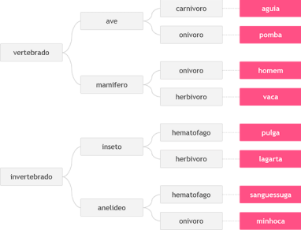

Você deve fazer um programa que leia um valor qualquer e apresente uma mensagem dizendo em qual dos
seguintes intervalos ([0,25], (25,50], (50,75], (75,100]) este valor se encontra.
Obviamente se o valor não estiver em nenhum destes intervalos, deverá ser impressa a mensagem “Fora de intervalo”.
O símbolo ( representa "maior que". Por exemplo: [0,25] indica valores entre 0 e 25.0000, inclusive eles.
(25,50] indica valores maiores que 25 Ex: 25.00001 até o valor 50.0000000.
Leia 2 valores inteiros (A e B). Após, o programa deve mostrar uma mensagem "São Multiplos" ou "Nao sao Multiplos",
indicando se os valores lidos são múltiplos entre si.
A empresa ABC resolveu conceder um aumento de salários a seus funcionários de acordo com a tabela.
Leia o salário do funcionário e calcule e mostre o novo salário, bem como o valor de reajuste
ganho e o índice reajustado, em percentual.
Leia a hora inicial e a hora final de um jogo. A seguir calcule a duração do jogo, sabendo que o mesmo pode começar em
um dia e terminar em outro, tendo uma duração mínima de 1 hora e máxima de 24 horas.
Neste problema você deverá ler 3 palavras que definem o tipo de animal possível segundo o esquema abaixo, da esquerda
para a direita. Em seguida conclua qual dos animais seguintes foi escolhido, através das três palavras fornecidas.
